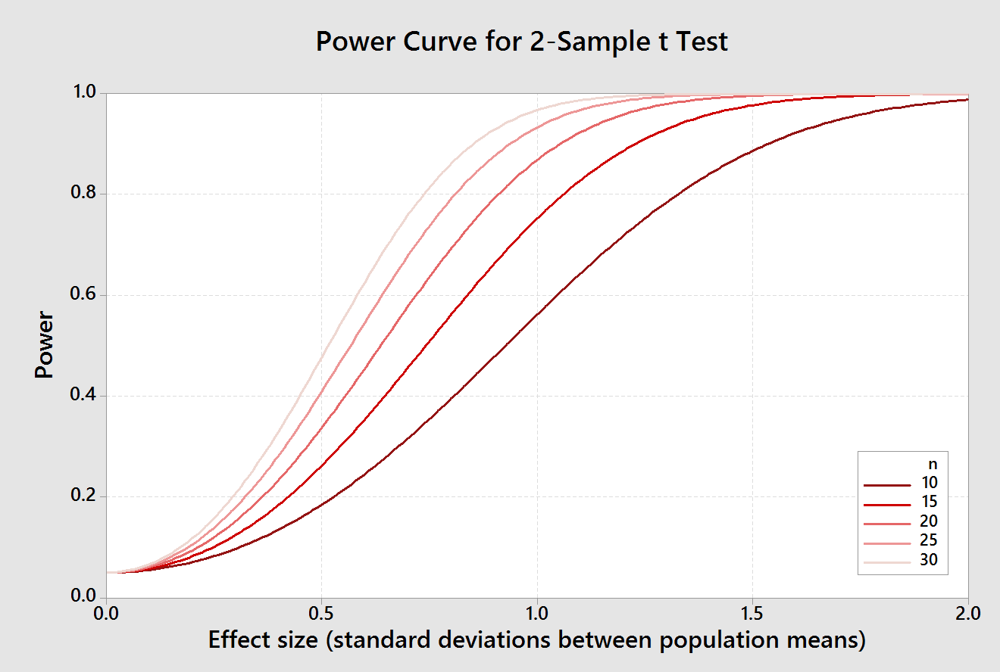

For a two-sample t-test comparing heart rates for lobsters treated with GABA to controls, the null hypothesis is:
Ho: μControl = μGABA , or equivalently: Ho: μControl - μGABA = 0
The alternative hypothesis is Ha:
μControl ≠ μGABA , or Ha: μControl - μGABA ≠ 0
Statistical errors arise from drawing a conclusion about the null (either rejecting or retaining it), and the error we can make depends on the conclusion we draw:
The graph shows the following:
To see what determines the error rates, you can change the amount of
difference between means, alpha level, and sample size and see what
happens.
If the null is false, only Type II (β) error is possible. We can only measure β error for a specific alternative. In reality we don't know what the alternative is, but setting the amount of difference between the population means shows how β and power are affected by the size of difference, the alpha level, and the sample size.
β error = 0.0004, power = 0.0006
Difference between population means
(0 = Ho is true)
μControl - μGABA =
Alpha level =
n per group =
If the null hypothesis is false, then Type II error rate (β) and statistical power (1-β) are displayed. The α level is still important because it is what determines the size of the rejection region, but we cannot make a Type I error if the null hypothesis is false. All three of the factors alter Type II error:
If you change the sample size to see this last point in action you'll see that the red curve moves to the right, which looks like the same effect as increase the size of difference between the means. However, the amount of difference between means isn't changing, the size of the standard errors is. To understand what is happening, click "Switch to BPM", which changes the x-axis to the scale of the data, which is heart rate in beats per minute. If you change the sample size now you will see that what is happening is that the null and alternative hypothesis means stay the same, but the sampling distributions get narrower as the sample size increases.
The reason that the alternative curve moves away from the null as sample size increases when the x-axis is set to t units is that t units are standard errors. As the standard error gets smaller the same amount of difference between means becomes a larger number of standard errors - for example, with a sample size of 10 the standard error was 1.21, and the means are 2.7/1.21 = 2.23 standard errors apart. If we increase the sample size to 100 the standard error is reduced to √7.3(1/100 + 1/100) = 0.38, and the same difference of 2.7 BPM is equal to 2.7/0.38 = 7.1 standard errors. When the x-axis is set to t-units the increase in number of standard errors between means can happen either by increasing the actual difference between means, or by reducing the size of the standard error, thereby increasing the number of standard errors between means.
You can make the null hypothesis true by setting the amount of difference between means to 0. With a difference of 0 the blue curve becomes the actual sampling distribution, and differences between means that are small enough to fall into the un-shaded retention region will cause us to correctly retain the true null. Differences between means that land in the blue-shaded rejection region will cause us to reject the null mistakenly, and are Type I errors. Since the area under the curve in the rejection region is set to equal α, the α-level we select is also the Type I error rate.
With the difference set to 0 you can choose different alpha levels and you will see how that choice affects the size of the rejection region.
However, note that while changing sample size affects the spread in the t-distribution, it does not change the size of the rejection region because that is determined solely by our choice of α level.
It is helpful to look at cases in which we know the null to be true or false to help us understand how the testing is working, but in an actual experiment we don't know if the null hypothesis is true or false, and we need to try to avoid both of the possible errors that we could make. The strategy we use is:
A good way to pick a sample size is to use a power curve, like the ones illustrated to the left. Each line represents the power curve for a different sample size, from 10 to 30; colors are selected so that sample size increases from darkest to lightest shade of red. The x-axis is effect size, which is the number of standard deviations between the means, and the y-axis is power.
If you start with the curve for n = 10, you'll see that the probability of detecting differences above about 1.5 standard deviations are very good - power is approximately 0.9 or better for these big effect sizes. The default effect size used in the applet above was 1 (the standard deviation for this example is 2.7, so a difference in means of 2.7 is 1 standard deviation). With a sample size of 10 the probability of detecting an effect size of 1 is close to 0.6. We have very little chance of detecting effects of 0.5 or below, which have power values of about 0.15 or lower.
Increasing sample size increases power to detect smaller differences. By the time n = 30 power is still high (0.9) for an effect size of 0.75, half the size we could detect when sample sizes were 10.
Note that power is very low for all sample sizes when effect sizes are tiny. The implication of this fact is that very small differences between population means can never be ruled out completely, even when sample sizes get large.
However, the size of effect we have to consider to be plausible gets very small when the sample size is large. For example, power to detect an effect of 0.2 standard deviation with a sample size of 10 is only 0.07, and if we retained the null hypothesis there would be a 93% chance that an effect of size 0.2 existed, and we just failed to detect it. In contrast, if we used a sample size of 1000 our power to detect an effect of size 0.2 increases to 0.99, and there would only be a 1% chance if we retained the null hypothesis that we had missed an effect of size 0.2. Just like with confidence interval widths, increasing sample size never buys us complete certainty, but it does allow us to narrow the range of possibilities that we have to consider.